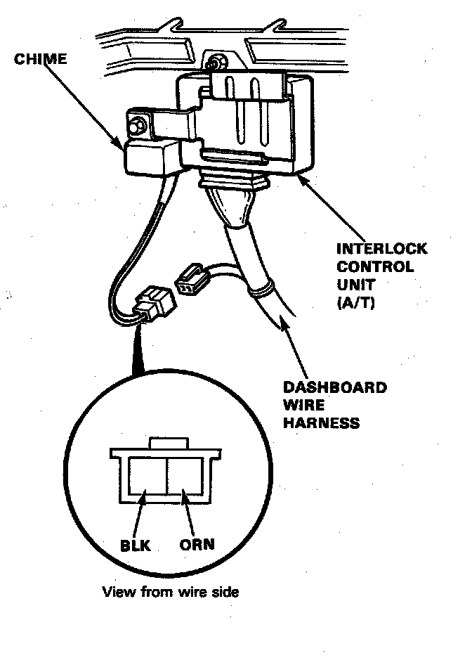

Chime Test
Chime:

Chime Test
When the ignition key is turned to the "O" position and removed, with the lights on, voltage is applied to the reminder circuit on the integrated control unit. When you open the driver's door, the warning circuit senses ground through the closed door switch.
With voltage at the "B7" terminal, ground at the "A7" terminal and no voltage at the "B9" terminal, the chime is activated to remind the driver to turn off the lights.
1. Remove the front console to disconnect the 2-P connector from the dashboard wire harness.
2. Test chime operation by connecting battery power to the ORN terminal, and ground to the BLK terminal, and cycling the power on-off repeatedly.
3. If the chime fails to sound every time power is cycled, replace it.